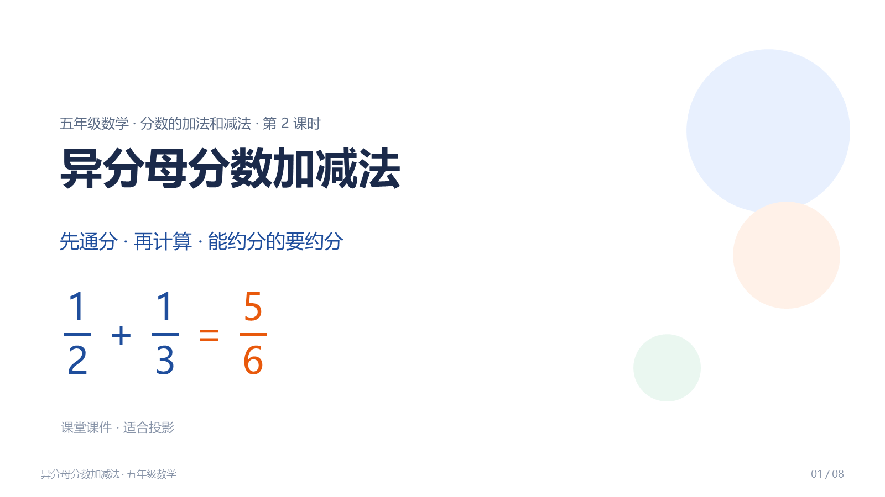
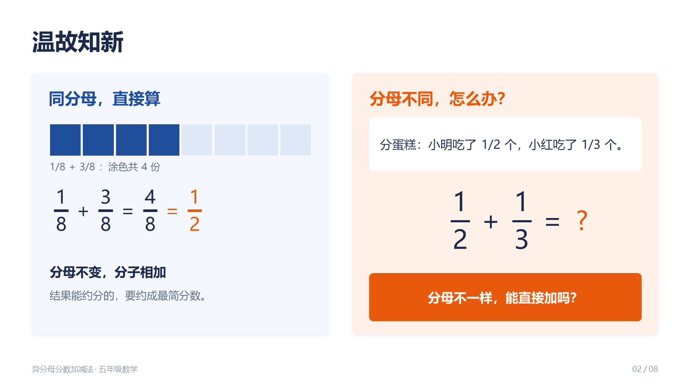
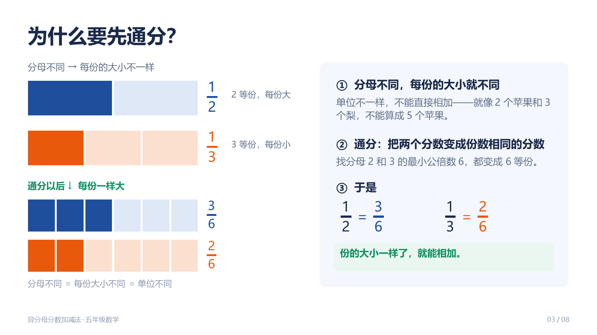
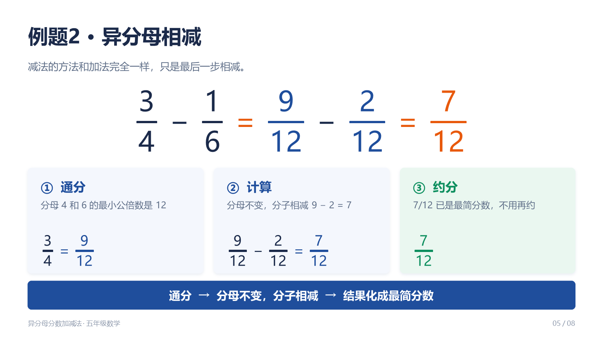
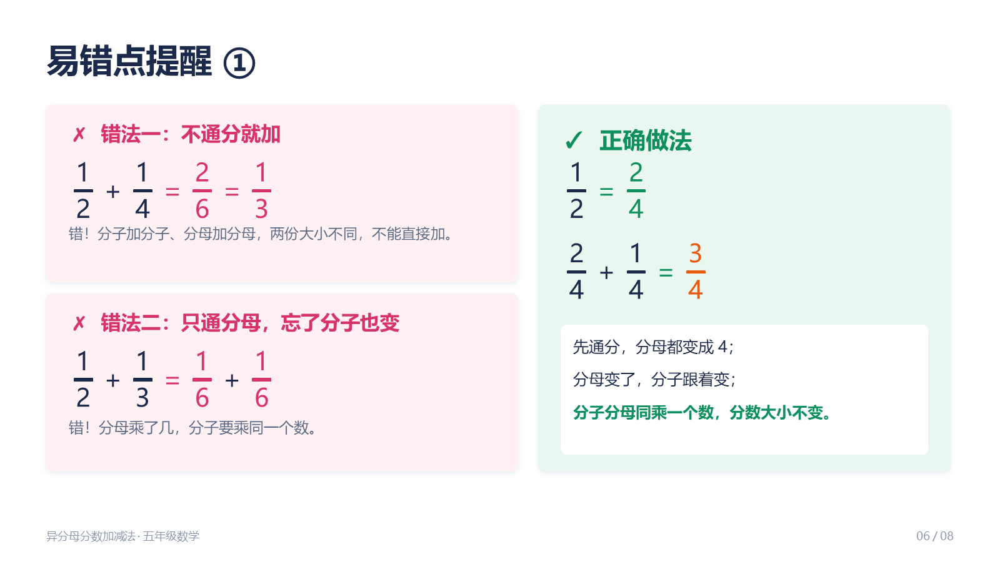
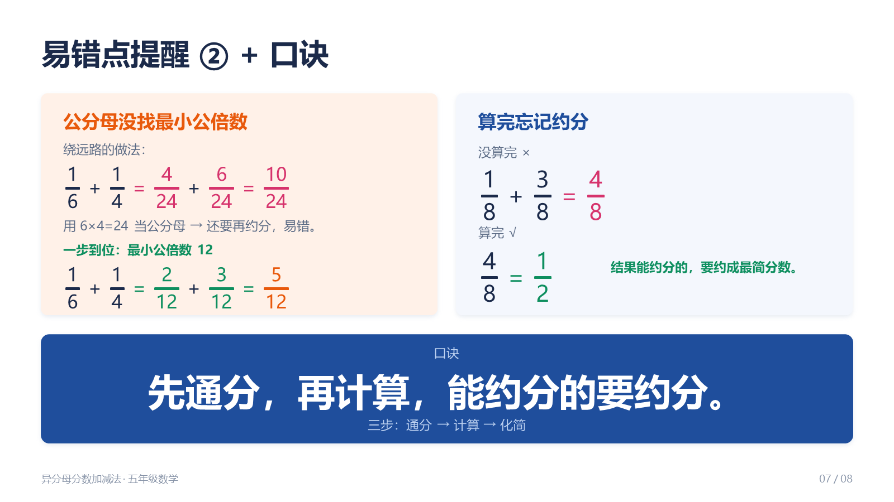
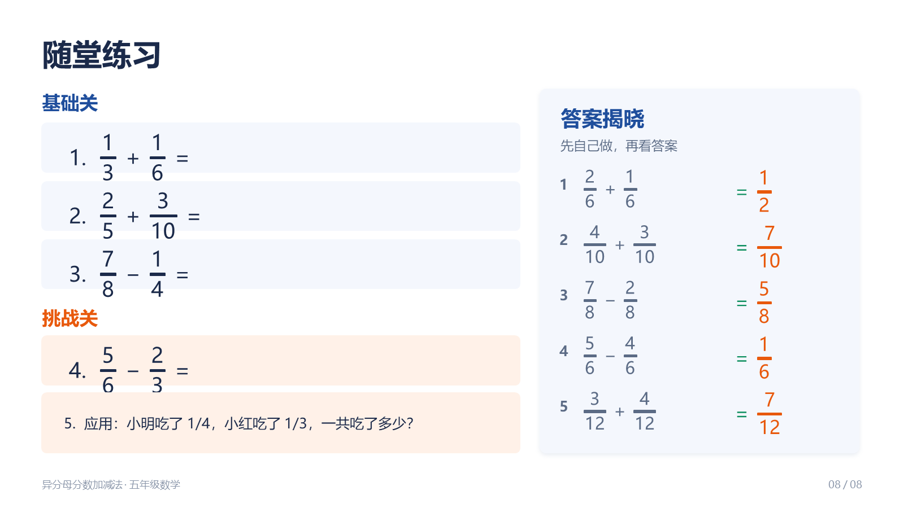

这个痛点，是不是你
痛点卡 · 案例04-1 形态一·课堂PPT课件
依据《子Agent执行规范》第〇节"痛点先行"及其"〇补·痛点提取细则"填写。
一、痛点原句（引用手册原文）
出自《WorkBuddy 教师实操手册》第04章 新形态课件：让知识点动起来 → 一、你做课件，是不是"上课放完就没了"？
"传统做课件的流程，你应该很熟：翻教材、想结构、开PPT、一页页做、找配图、排版对齐。一套下来两三个小时，其中一半时间花在排版对齐这种机械操作上。"
"更扎心的是，你辛苦做的PPT，上课放完，学生下课就忘了。它完成了一次'展示'，但没有留下任何能让学生课后带走的东西。"
"PPT没有错，但'课件=PPT'这个等式，该更新了。"
同章"形态一：课堂课件（PPT）"小节给出解法入口：
"它直接生成一份.pptx，右侧产物区预览，下载就能用。这是WorkBuddy原生就有的能力。做完你会发现，答案不一定一次到位，试着边聊边改。"
"骨架：可以先让它出大纲，你看结构……血肉：结构确认了，再让它展开每一页内容……打磨：看成品，哪里不对点哪里，'第3页颜色太素，换个活泼点的''这里加一个生活里的例子'。"
二、痛点主体
小学五年级数学老师。本案例对应《分数的加法和减法》单元第2课时·异分母分数加减法。 学生基础（据备课素材）：已学同分母分数加减法、约分、通分。
三、旧做法的代价
| 环节 | 旧做法 | 代价 |
|---|---|---|
| 备 | 翻教材、想结构 | 结构反复推翻 |
| 做 | 开PPT、一页页做、找配图 | 一套 2~3 小时 |
| 排 | 排版对齐 | 一半时间花在这种机械操作上 |
| 用 | 上课放完 | 学生下课就忘，没留下能带走的东西 |
痛点句的识别信号吻合：手册用"两三个小时""一半时间"这类绑定时长/动作量的具体抱怨，不是抽象吐槽。
四、想要的目标（做到什么程度算"解决好"）
- 直接能用的 .pptx：下载就能投影，不需要老师再返工排版。
- 内容对得上这节课：6~8 页，覆盖导入、例题讲解、易错点提醒、随堂练习四段；知识点严格取自备课素材。
- 投影可读：浅底深字、正文字号够大、分数公式用上下结构而不是斜杠，后排学生也看得清。
- 讲得清难点：把"为什么要通分""找最小公倍数作公分母""能约分要约分"这三个关键点可视化、钉住。
五、【补全】
手册讲了"做课件很费时间 + PPT 放完就没"，但没讲透这节课本身为什么值得做课件。补一句：
【补全】异分母分数加减法的难点不在算，在"量感"——学生看不明白"分母不同的两份大小不一样，所以不能直接加"。课件真正的价值不是"放给学生看"，而是把 通分→计算→约分 这条算理链画出来（用分数条/等份图示），并把学生最容易栽的三个坑（不通分直接加、只通分母忘改分子、忘约分）摆在对错对照里。这样老师讲得清，学生当堂看得明。
六、价值归类
✅ 目标导向。 目标是"这节课讲得更明白、学生少在公分母上出错、老师不在排版上耗掉两个小时"，因此才做这份课件。 ❌ 不是"工具理性"。本案例的出发点不是"我有个PPT所以找个方法优化它"——PPT 只是承载这个教学目标的形态之一（手册原话："PPT只是其中一种形态"）。
七、本案例要回扣的总纲
手册本章收束句："同一个知识点，别只做PPT。让它能翻、能玩、能被带走，才是新形态课件。" → 本案例（形态一）是四种形态的起点与基准：先做出老师最熟悉的 PPT，再用同一节课去做 HTML 课件（04-2）、互动课件（04-3）、知识卡片（04-4）。
AI 是怎么解决的
产物 · 在线预览
质检图
构建自核验截图，点击查看原图





